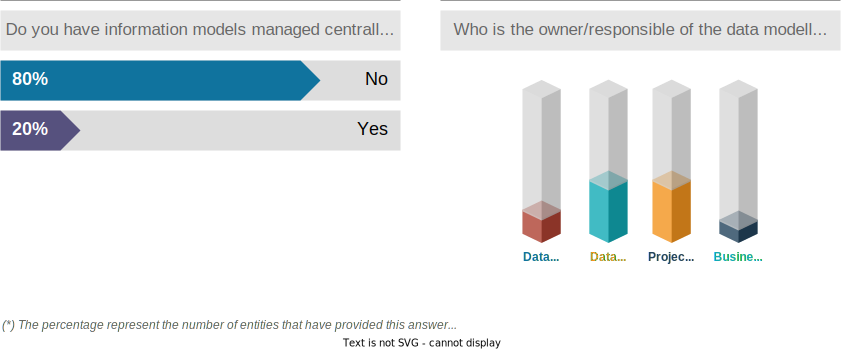
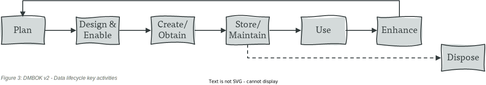
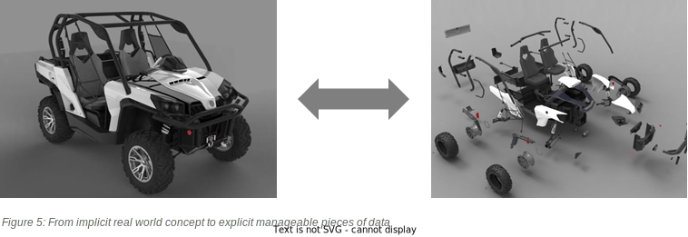
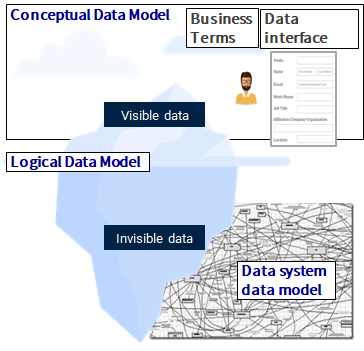

INTRODUCTION
“To transform AXA’s value proposition ‘from payer to partner’, we will deliver new services complementing the traditional insurance coverage and build new business models to increase the protection of our customers. Purpose, values and vision are shared by each and every employee throughout our organization, as we tailor our services and solutions to each of our 108 million customers around the world, one person at a time, in an ever-changing and fast-evolving world”. AXA purpose, values and vision.
Our aspiration to automate behaviors and deliver new business services (e.g.; to send an email instead of sending physical mail by post) requires to translate real world business interactions into data elements (e.g.; “Matthew”, “Italy”, “176.31.84.249”) that are understood by both the business actors and the IT system. Data modeling is the process of analyzing business processes and real world domain knowledge to capture the data requirements and support application design. Data models will define the data structures (e.g.; “‘Matthew’ will be stored as a ‘Person’”, “‘Italy’ will be stored as a ‘Country’”), the relations between them (e.g.; “One ‘Person’ (instance) can live in multiple ‘Countries’”), and data lifecyle management rules.
By looking at data elements individually, there is a high chance ending up with a very complex and inefficient data model. To overcome this problem, over the years, computer science has demonstrated the benefits of sharing a common understanding of the business terminology and data requirements among the stakeholders involved in a project or application modernization. The ubiquitous language that emerges from the data modeling process depends on many factors such as cultural background and vocabulary, scope of the project, legacy applications, processing performance requirement, audience, etc. Yet, it is challenging to translate implicit business knowledge into explicit business data objects, at the right level of granularity (precision) to be computed by information systems. Data modeling closes the gaps by providing views, techniques and design patterns to successfully create and maintain the translations between the business objects of the real word and the data within the information system, cf. illustration here.
Data modeling value lies in two folds:

Data modeling practice and expertise should be maintained to support AXA ambitions. The AXA data management activity map is consistent with this view.
{kind=link}
The paper does not intent to explain how to build a data model, nor to provide guidance on the tooling. Its goal is to bring awareness about data modeling practice, clarify who should be involved and what we should target to maintain the appropriate level of expertise that can be activated when required.
SURVEY OF AXA ENTITIES PRACTICE
Several AXA entities (AXA Italy, AXA Germany, AXA Spain, AXA Belgium, AXA Hong Kong, AXA UK & Ireland, AXA XL, AXA Switzerland, AXA Partners, AXA France, AXA Japan) have been surveyed about their data modeling practice within the data architecture community. Below are the key insights learnt :
- All the entities surveyed have a data modeling practice experience be it in ad-hoc mode or managed centrally by a dedicated team.
- For most entities, logical or physical data models are designed on case by case at the project level, sometimes with the support of a data architect.
- The focus is mostly on data platforms (BI & Analytics, Integration, MDM)
- Data modeling ownership varies per entity and is mainly divided between data architects and projects teams. In one instance, the data modeling endeavor is done by a data analyst in the CDO team for the BI & Analytics platform.
From these earlier results, we can observe that there are no common approach cross entities in term of scope and ownership of data modeling practice.

KEY LEARNINGS
When doing data modeling?
“No meaningful program can be constructed without the use of some sort of data structure. Some design methods and programming languages even organize an entire software system around data structures”. Software Engineering Body of Knowledge (SEBOK).
Data modeling is involved a the early stage of the data life cycle when important decisions are made about data structures (visible data and invisible data) and it is still possible to iterate in the design process.

At the early stage of a project or significant change (Plan phase), the main focus is to identify business scope, business concepts, related business keys and associations, audience. A strong collaboration between the business actors and data architect is required for the alignment of stakeholders and the emergence of the ubiquitous language. The business data requirements must be considered at different levels: project level (e.g.; claim handling in a specific region), business capability level (e.g.; service fulfillment customer experience), enterprise level (e.g.; strategic partnerships).
During the Design & Enable phase, the data architect elaborates one or several logical data models. Data architects evaluate existing data models, identify possible extensions and limitations, validate with the business actors the most appropriate data model and implications (e.g.; data quality enforcement by design, possible data model extensions).
During Create/Obtain phase, the data/software engineers translate the logical data model into a physical one (technical artefact) that the target database management system can understand. Now the data model is ready to receive data. Store/Maintain, Use, Enhance, Disposal of phases have less impact on the data model. However, it’s important to maintain the data documentation and to make the models available to a broader audience, cf. metadata management.
Required skills
Data modeling activities result in three types of deliverables: Conceptual, logical and physical data models.
At the conceptual level (visible data), communication skill is essential
Although the data architect may use modeling techniques such as generalization or normalization to effectively translate business objects into discrete units of data objects, an effective communication is key to understand business requirements (data scope and usages, data life cycle management, business need for data integration and data standardization). Creating awareness about data modeling practice and focusing on specific parts of the model will make workshops with business representatives more effective. Sector data models will help also for communication as they are in general stable external references peer reviewed and validated. The objective here is not necessary to align everyone on the same meaning for the same business concept, but to clarify the meaning in specific business domains.
Domain-Driven Design techniques and patterns are relevant here to identify the problem space (domains and subdomains), and the solution bounded contexts and collaborations, cf. Eric Evans, Domain-Driven Design.
Identification of core data elements that support the business activities, cf. data modeling prioritization.
{kind=link}
Leveraging industry data models such as ACORD (insurance), FIHM/FHIR (health), etc. can help to ask the right questions to the business and refine the data model.
Generalization versus specialization: generalization can be useful when strong flexibility is required. It should be coupled with up to documentation to ease readability and interpretability of the data model. The example provided shows the extreme scenario. Intermediate levels of generalization are possible, cf. illustration here.
No more than 3 concepts discussed at a time: present to the participants only the business concepts that are relevant to make decisions and understand the implications. Examples: Person/Role/Policy, Structure/Place/Place Address, Loss event/Loss occurrence/Claim, etc. The reality is complex, cf. multi-level ontologies, it’s important to stay focus on the business context and problem to solve.*
Simple representation: The initial representation for discussion and aglinment must be simple to understand for the audience, cf. Ronald G. Ross conceptual model.
At logical and physical levels (invisible data), a good understanding of common data modeling schemes is required

Knowing data modeling paradigms such as entity-relationship, dimensional, object-oriented, time-based, data vault©, etc. is useful ; and their associate patterns and techniques (e.g.; Dimensional Modeling Techniques) can help anticipate design choices and their implications.
Snapshot versus slowly changing dimension: At the logical level, it’s important to group data elements together (or not), and to identify the best patterns to manage the data. For example a snapshot data structure best fit aggregated data where use cases are known upfront, with a specific refresh frequency. On the other side, slow changing dimension keeps track of the changes so that the current state can be reconstructed at any point in time, cf. illustration here.
Database Management System (DBMS) adaptation: At the physical level, it also important to have a good overview and understanding of database management systems techniques, related functional and non-functional requirements covered, cf. illustration here: Source: Scalable Data Management - An In Depth Tutorial on NoSQL Data Stores - Felix Gessert, Wolfram Wingerath , Norbert Ritter.
Data modeling is a skill essentially harvested from practical experiences and collaborations
Data modeling is simple in theory but complex in practice. The temptation is high for a data modeler to elaborate and maintain a single holistic data model of the enterprise, or to design “generic” data models. Industry or market data models can be used for inspiration, but reference data models must be adapated to support the business requirements. A generic data model is either very large or very abastract, so it doesn’t support the design of a specific business application. Each entity should empower architects or data experts looking to develop their data modeling expertise with dedicated training programs, practical experience on concrete use cases and peer reviews. Priority should be given to data architect, data analyst, data engineer and software engineer. Yet other data experts such as data scientist, data custodian may find themselves in the position of making data modeling design choices. Thus, they should also benefit from the training programs on a voluntary basis.
Avoid an isolate community of data modelers focusing solely on data structures. People practicing data modeling should be embedded in projects to fully grasp other stakeholders’ constraints and expectations. Build a local community of experts to exchange best practices and support local data initiatives. Leverage local and global networks to cross fertilize and keep the community up to date with new data requirements, technology trends and data modeling techniques or patterns. Data models belong not to the experts but to the organization; they must be easily accessible.
Business impacts when data modeling is not part of the design process
Packaged solutions
An organization that has chosen a “buy before build” strategy for acquiring IT applications tends to see data modeling practice decreasing overtime. The lack of data modeling practice within this context will lead to:
- Inconsistent extensions or customizations which will make the data model more complex overtime. These inconsistencies are often hard to change after deployment because of downstream applications consuming the data.
- Missing documentation to track business rationale that have supported extensions or customizations choices (ex. Why do we have two entities describing the same business concept?).
- No capacity to support a business partnership.
In-house solutions, digital products or other operational applications
Software development teams implement data structures based on business requirements and delivery constraints. Data models design effort is traded-off with delivery speed, and availability of the business domain experts. If the conditions for good quality data modeling are not met, the application may not be easy to use, or suffer from scalability, performance, interoperability or security issues. (cf. DesignStaminaHypothesis). With the rise of schema-less technologies, some engineers have assumed that flexible schema means less care to the data structures and more agility. “By-passing” data modeling as major later implications, for the application itself and for downstream applications. Flexible schema can be relevant in specific contexts, must be considered carefully and used appropriately, cf. Schemaless Data Structures.
BI and analytics, integration, master data management
The teams in charge of BI and analytics, integration or MDM applications have always been required to design data models, but also to understand the data models from others. There are usually in the position of consuming a variety of data models, sometimes also facing the data model’s evolutions.
When the data model is not self-explanatory, the teams have to rely on the functional specification (when it exists), or to infer and interpret the data model by doing some data archeology (data profiling). It leads to costly, time consuming data integration effort. The complexity increases requiring complex business rules to attempt to reconciliate the data prior to derive any business value.
ENTERPRISE DATA MODELS

“Data is representation of the real world. If you want your data to be simple, make the world simple and get back to me”. Karen Lopez, DAMA Advisor.
With unified data, organizations get data that is both actionable and accurate. Unification of data cross processes can benefit an average of 19% of employees workweek searching for data. However, unification of data implies first the unification of data processes, which implies a unification of some business processes. The purpose of data modeling at AXA is to support the business domains in their mission, by leveraging robust reference data models.
Reasons for customization: capture specific business requirements to support a business process.
Reasons for standardization: anticipating changes in the business model (scalability, flexibility), regulatory compliance related data management and reporting.
Note: data integration and data standardization are not supporting the same objectives, cf. illustration here. Data standardization (sharing a data model) targets a consistent user experience for end users with data and the possibility to connect/reuse existing process or tools that leverage the data standard. Data integration (sharing data) requires to expose one or multiple data models triggered by collaboration needs to optimize cost (reuse data) and/or generate more additional value (e.g. develop additional services through business partnerships).
Data standards at AXA
A high level map of data objects is proposed by AXA Group Data Architecture. This reference must be used ONLY AS AN INPUT to ease communication and collaboration cross entities and with other parties (partners, service providers, etc.).
For insurance industry related processes, the approach undertaken by AXA since 2013 is to leverage ACORD Information Model ACORD data model is very generic, it has to be customized for the context of the project scope and data requirements. Object Management Group (OMG) P&C Data Model can be used also for inspiration for P&C business line. For IT business activities, AXA relies on the domain expert ServiceNow, and The Open Group IT4IT, cf. IT4IT Information Model.
The overall recommendation is whenever possible to leverage domain standards as an input (e.g.; for finance, compliance, etc.), and to adapt those standards to the context.
Data modeling pitfalls
Not doing data modeling at the early stage
It can be tempting to postpone the modeling effort until later, but this is not a good practice as data models are hard to change.
How to avoid the pitfall? -> start by data modeling and ensure a minimum is done before entering into the technical solution. CVhallenge stakeholders if they don’t want.
Data modeling roundabout or data model everything
Without business requirements, there is a high chance entering into the data modeling roundabout modeling all the scenario.
How to avoid the pitfall? -> discuss with a buysiuness architect, reach out to a business expert to confirm.
TOOLING
Several tools exist on the market, from standalone tools specialized in specific area (e.g.; API design) to enterprise architecture and modeling repositories. For data modeling the tooling is import for collaboration and as an accelerator to derive automatically the physical data schema from logical design.
CONCLUSION
Data modeling to facilitate collaborations and to improve the user experience
Earlier in this paper, we defined data modeling as a mean to reach a common understanding of the data concepts. Business involvement and data modeling techniques will ease the translation of implicit business knowledge into explicit data structures. Ease collaboration also means:
- Make existing data models accessible to ease understanding and adoption
- Leverage standards or industry data models when possible as solid baselines
- Promote data standardization with clear business objectives
Data modeling for data quality, data security, data interoperability, performance
Data modeling is one component of the design and implementation of data products and application systems. The decisions taken during the data modeling design activities have implications that need to be shared. The data architect has to engage with the business stakeholders so they have a good understanding of the data model and can validate the implications. The results of these discussions need to be captured for traceability and governance purpose.
Data modeling techniques are skills that can be acquire from training and develop through practical experiences. Data experts can develop their data modeling expertise with dedicated training programs.
Collective effort
Isolate community of data modelers focusing solely on data structures leads to useless data models that appears more as a constraint than an asset to support design decisions. Data modeling is a collective effort that must be maintained over time to keep the agility to adapt data structures to new business needs. It is also important to:
- Create awareness about data modeling practices beyond data experts’ communities
- Build a local community of experts to exchange best practices and support local data initiatives
REFERENCES
Data and Reality, William Kent, 1978 - Summary
Should You Consider a Unified Data Model?, DATAVERSITY
Data Interoperability Requirements, TOGAF
APPENDICES
Example of conceptual model from AXA CH
AXA UK Health approach for data modeling
Conceptual data modeling tooling example “Protégé” (ontologies)
ACKNOWLEDGEMENTS
We gratefully acknowledge the contribution of the following people for reviewing the paper and sharing their experiences:
- Michel HANS (AXA France)
- Paul GALLOP (AXA Health UK)
- Matthew BROWN (AXA Insurance UK)
- Andreas GRUBER (AXA Switzerland)
- Mélissa MARIËN (AXA Belgium)
SIGNIFICANT REVISIONS
24 October 2022: Published
17 January 2023: AXA reference data model chapter